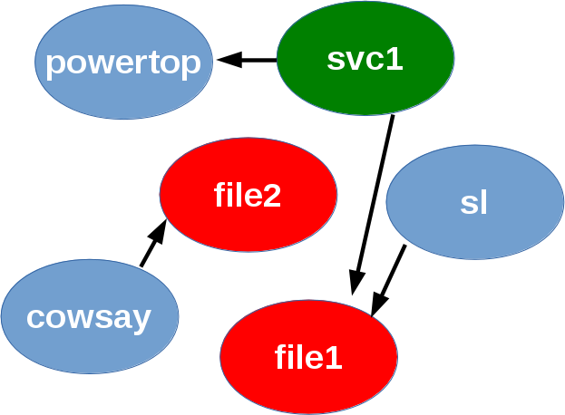
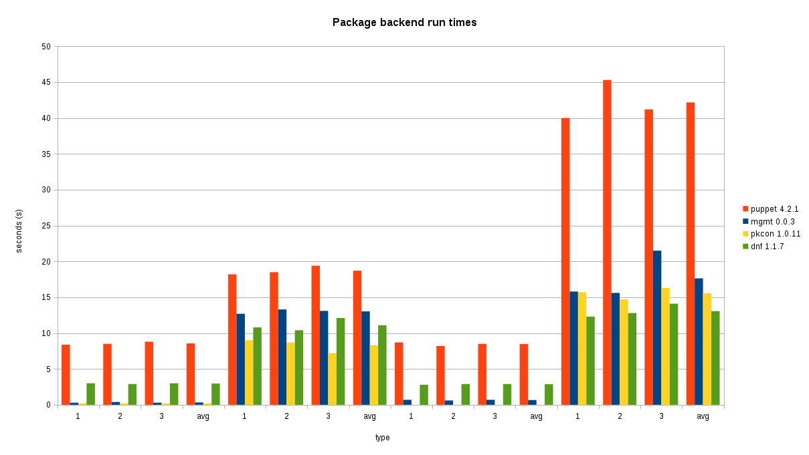

Automatic grouping in mgmt
In this post, I’ll tell you about the recently released “automatic grouping” or “AutoGroup” feature in mgmt, a next generation configuration management prototype. If you aren’t already familiar with mgmt, I’d recommend you start by reading the introductory post, and the second post. There’s also an introductory video.
Resources in a graph
Most configuration management systems use something called a directed acyclic graph, or DAG. This is a fancy way of saying that it is a bunch of circles (vertices) which are connected with arrows (edges). The arrows must be connected to exactly two vertices, and you’re only allowed to move along each arrow in one direction (directed). Lastly, if you start at any vertex in the graph, you must never be able to return to where you started by following the arrows (acyclic). If you can, the graph is not fit for our purpose.
 |
| An example DAG from Wikipedia |
The graphs in configuration management systems usually represent the dependency relationships (edges) between the resources (vertices) which is important because you might want to declare that you want a certain package installed before you start a service. To represent the kind of work that you want to do, different kinds of resources exist which you can use to specify that work.
Each of the vertices in a graph represents a unique resource, and each is backed by an individual software routine or “program” which can check the state of the resource, and apply the correct state if needed. This makes each resource idempotent. If we have many individual programs, this might turn out to be a lot of work to do to get our graph into the desired state!
Resource grouping
It turns out that some resources have a fixed overhead to starting up and running. If we can group resources together so that they share this fixed overhead, then our graph might converge faster. This is exactly what we do in mgmt!
Take for example, a simple graph such as the following:
|  |
| Simple DAG showing one svc, two file, and three pkg resources… |
{kind=link}
We can logically group the three pkg resources together and redraw the graph so that it now looks like this:
 |
| DAG with the three pkg resources now grouped into one! Overlapping vertices mean that they act as if they’re one vertex instead of three! |
This all happens automatically of course! It is very important that the new graph is a faithful, logical representation of the original graph, so that the specified dependency relationships are preserved. What this represents, is that when multiple resources are grouped (shown by overlapping vertices in the graph) they run together as a single unit. This is the practical difference between running:
$ dnf install -y powertop
$ dnf install -y sl
$ dnf install -y cowsay
if not grouped, and:
$ dnf install -y powertop sl cowsay
when grouped. If you try this out you’ll see that the second scenario is much faster, and on my laptop about three times faster! This is because of fixed overhead such as cache updates, and the dnf dep solver that each process runs.
This grouping means mgmt uses this faster second scenario instead of the slower first scenario that all the current generation tools do. It’s also important to note that different resources can implement the grouping feature to optimize for different things besides performance. More on that later…
The algorithm
I’m not an algorithmist by training, so it took me some fiddling to come up with an appropriate solution. I’ve implemented it along with an extensive testing framework and a series of test cases, which it passes of course! If we ever find a graph that does not get grouped correctly, then we can iterate on the algorithm and add it as a new test case.
The algorithm turns out to be relatively simple. I first noticed that vertices which had a relationship between them must not get grouped, because that would undermine the precedence ordering of the vertices! This property is called reachability. I then attempt to group every vertex to every other vertex that has no reachability or reverse reachability to it!
The hard part turned out to be getting all the plumbing surrounding the algorithm correct, and in particular the actual vertex merging algorithm, so that “discarded edges” are reattached in the correct places. I also took a bit of extra time to implement the algorithm as a struct which satisfies an “AutoGrouper” interface. This way, if you’d like to implement a different algorithm, it’s easy to drop in your replacement. I’m fairly certain that a more optimal version of my algorithm is possible for anyone wishing to do the analysis.
A quick note on nomenclature: I’ve actually decided to call this grouping and not merging, because we actually preserve the unique data of each resource so that they can be taken apart and mixed differently when (and if) there is a change in the compiled graph. This makes graph changeovers very cheap in mgmt, because we don’t have to re-evaluate anything which remains constant between graphs. Merging would imply a permanent reduction and loss of unique identity.
Parallelism and user choice
It’s worth noting two important points:
- Auto grouping of resources usually decreases the parallelism of a graph.
- The user might not want a particular resource to get grouped!
You might remember that one of the novel properties of mgmt, is that it executes the graph in parallel whenever possible. Although the grouping of resources actually removes some of this parallelism, certain resources such as the pkg resource already have an innate constraint on sequential behaviour, namely: the package manager lock. Since these tools can’t operate in parallel, and since each execution has a fixed overhead, it’s almost always beneficial to group pkg resources together.
Grouping is also not mandatory, so while it is a sensible default, you can disable grouping per resource with a simple meta parameter.
Lastly, it’s also worth mentioning that grouping doesn’t “magically” happen without some effort. The underlying resource needs to know how to optimize, watch, check and apply multiple resources simultaneously for it to support the feature. At the moment, only the pkg resource can do any grouping, and even then, there could always be some room for improvement. It’s also not optimal (or even logical) to group certain types of resources, so those will never be able to do any grouping. We also don’t group together resources of different kinds, although mgmt could support this if a valid use case is ever found.
File grouping
As I mentioned, only the pkg resource supports grouping at this time. The file resource demonstrates a different use case for resource grouping. Suppose you want to monitor 10000 files in a particular directory, but they are specified individually. This would require far too many inotify watches than a normal system usually has, so the grouping algorithm could group them into a single resource, which then uses a recursive watcher such as fanotify to reduce the watcher count by a factor of 10000. Unfortunately neither the file resource grouping, nor the fanotify support for this exist at the moment. If you’d like to implement either of these, please let me know!
If you can think of another resource kind that you’d like to write, or in particular, if you know of one which would work well with resource grouping, please contact me!
Science!
I wouldn’t be a very good scientist (I’m actually a Physiologist by training) if I didn’t include some data and a demonstration that this all actually works, and improves performance! What follows will be a good deal of information, so skim through the parts you don’t care about.
| Science <3 data |
{kind=link}
I decided to test the following four scenarios:
- single package, package check, package already installed
- single package, package install, package not installed
- three packages, package check, packages already installed
- three packages, package install, packages not installed
These are the situations you’d encounter when running your tool of choice to install one or more packages, and finding them either already present, or in need of installation. I timed each test, which ends when the tool tells us that our system has converged.
Each test is performed multiple times, and the average is taken, but only after we’ve run the tool at least twice so that the caches are warm.
We chose small packages so that the fixed overhead delays due to bandwidth and latencies are minimal, and so that our data is more representative of the underlying tool.
The single package tests use the powertop package, and the three package tests use powertop, sl, and cowsay. All tests were performed on an up-to-date Fedora 23 laptop, with an SSD. If you haven’t tried sl and cowsay, do give them a go!
The four tools tested were:
- puppet
- mgmt
- pkcon
- dnf
The last two are package manager front ends so that it’s more obvious how expensive something is expected to cost, and so that you can discern what amount of overhead is expected, and what puppet or mgmt is causing you. Here are a few representative runs:
mgmt installation of powertop:
$ time sudo ./mgmt run --file examples/pkg1.yaml --converged-timeout=0
21:04:18 main.go:63: This is: mgmt, version: 0.0.3-1-g6f3ac4b
21:04:18 main.go:64: Main: Start: 1459299858287120473
21:04:18 main.go:190: Main: Running...
21:04:18 main.go:113: Etcd: Starting...
21:04:18 main.go:117: Main: Waiting...
21:04:18 etcd.go:113: Etcd: Watching...
21:04:18 etcd.go:113: Etcd: Watching...
21:04:18 configwatch.go:54: Watching: examples/pkg1.yaml
21:04:20 config.go:272: Compile: Adding AutoEdges...
21:04:20 config.go:533: Compile: Grouping: Algorithm: nonReachabilityGrouper...
21:04:20 main.go:171: Graph: Vertices(1), Edges(0)
21:04:20 main.go:174: Graphviz: No filename given!
21:04:20 pgraph.go:764: State: graphStateNil -> graphStateStarting
21:04:20 pgraph.go:825: State: graphStateStarting -> graphStateStarted
21:04:20 main.go:117: Main: Waiting...
21:04:20 pkg.go:245: Pkg[powertop]: CheckApply(true)
21:04:20 pkg.go:303: Pkg[powertop]: Apply
21:04:20 pkg.go:317: Pkg[powertop]: Set: installed...
21:04:25 packagekit.go:399: PackageKit: Woops: Signal.Path: /8442_beabdaea
21:04:25 packagekit.go:399: PackageKit: Woops: Signal.Path: /8443_acbadcbd
21:04:31 pkg.go:335: Pkg[powertop]: Set: installed success!
21:04:31 main.go:79: Converged for 0 seconds, exiting!
21:04:31 main.go:55: Interrupted by exit signal
21:04:31 pgraph.go:796: Pkg[powertop]: Exited
21:04:31 main.go:203: Goodbye!
real 0m13.320s
user 0m0.023s
sys 0m0.021s
puppet installation of powertop:
$ time sudo puppet apply pkg.pp
Notice: Compiled catalog for computer.example.com in environment production in 0.69 seconds
Notice: /Stage[main]/Main/Package[powertop]/ensure: created
Notice: Applied catalog in 10.13 seconds
real 0m18.254s
user 0m9.211s
sys 0m2.074s
dnf installation of powertop:
$ time sudo dnf install -y powertop
Last metadata expiration check: 1:22:03 ago on Tue Mar 29 20:04:29 2016.
Dependencies resolved.
==========================================================================
Package Arch Version Repository Size
==========================================================================
Installing:
powertop x86_64 2.8-1.fc23 updates 228 k
Transaction Summary
==========================================================================
Install 1 Package
Total download size: 228 k
Installed size: 576 k
Downloading Packages:
powertop-2.8-1.fc23.x86_64.rpm 212 kB/s | 228 kB 00:01
--------------------------------------------------------------------------
Total 125 kB/s | 228 kB 00:01
Running transaction check
Transaction check succeeded.
Running transaction test
Transaction test succeeded.
Running transaction
Installing : powertop-2.8-1.fc23.x86_64 1/1
Verifying : powertop-2.8-1.fc23.x86_64 1/1
Installed:
powertop.x86_64 2.8-1.fc23
Complete!
real 0m10.406s
user 0m4.954s
sys 0m0.836s
puppet installation of powertop, sl and cowsay:
$ time sudo puppet apply pkg3.pp
Notice: Compiled catalog for computer.example.com in environment production in 0.68 seconds
Notice: /Stage[main]/Main/Package[powertop]/ensure: created
Notice: /Stage[main]/Main/Package[sl]/ensure: created
Notice: /Stage[main]/Main/Package[cowsay]/ensure: created
Notice: Applied catalog in 33.02 seconds
real 0m41.229s
user 0m19.085s
sys 0m4.046s
pkcon installation of powertop, sl and cowsay:
$ time sudo pkcon install powertop sl cowsay
Resolving [=========================]
Starting [=========================]
Testing changes [=========================]
Finished [=========================]
Installing [=========================]
Querying [=========================]
Downloading packages [=========================]
Testing changes [=========================]
Installing packages [=========================]
Finished [=========================]
real 0m14.755s
user 0m0.060s
sys 0m0.025s
and finally, mgmt installation of powertop, sl and cowsay with autogrouping:
$ time sudo ./mgmt run --file examples/autogroup2.yaml --converged-timeout=0
21:16:00 main.go:63: This is: mgmt, version: 0.0.3-1-g6f3ac4b
21:16:00 main.go:64: Main: Start: 1459300560994114252
21:16:00 main.go:190: Main: Running...
21:16:00 main.go:113: Etcd: Starting...
21:16:00 main.go:117: Main: Waiting...
21:16:00 etcd.go:113: Etcd: Watching...
21:16:00 etcd.go:113: Etcd: Watching...
21:16:00 configwatch.go:54: Watching: examples/autogroup2.yaml
21:16:03 config.go:272: Compile: Adding AutoEdges...
21:16:03 config.go:533: Compile: Grouping: Algorithm: nonReachabilityGrouper...
21:16:03 config.go:533: Compile: Grouping: Success for: Pkg[powertop] into Pkg[cowsay]
21:16:03 config.go:533: Compile: Grouping: Success for: Pkg[sl] into Pkg[cowsay]
21:16:03 main.go:171: Graph: Vertices(1), Edges(0)
21:16:03 main.go:174: Graphviz: No filename given!
21:16:03 pgraph.go:764: State: graphStateNil -> graphStateStarting
21:16:03 pgraph.go:825: State: graphStateStarting -> graphStateStarted
21:16:03 main.go:117: Main: Waiting...
21:16:03 pkg.go:245: Pkg[autogroup:(cowsay,powertop,sl)]: CheckApply(true)
21:16:03 pkg.go:303: Pkg[autogroup:(cowsay,powertop,sl)]: Apply
21:16:03 pkg.go:317: Pkg[autogroup:(cowsay,powertop,sl)]: Set: installed...
21:16:08 packagekit.go:399: PackageKit: Woops: Signal.Path: /8547_cbeaddda
21:16:08 packagekit.go:399: PackageKit: Woops: Signal.Path: /8548_bcaadbce
21:16:16 pkg.go:335: Pkg[autogroup:(cowsay,powertop,sl)]: Set: installed success!
21:16:16 main.go:79: Converged for 0 seconds, exiting!
21:16:16 main.go:55: Interrupted by exit signal
21:16:16 pgraph.go:796: Pkg[cowsay]: Exited
21:16:16 main.go:203: Goodbye!
real 0m15.621s
user 0m0.040s
sys 0m0.038s
Results and analysis
My hard work seems to have paid off, because we do indeed see a noticeable improvement from grouping package resources. The data shows that even in the single package comparison cases, mgmt has very little overhead, which is demonstrated by seeing that the mgmt run times are very similar to the times it takes to run the package managers manually.
In the three package scenario, performance is approximately 2.39 times faster than puppet for installation. Checking was about 12 times faster! These ratios are expected to grow with a larger number of resources.
|  |
| Bigger bars is worse… Puppet is in Red, mgmt is in blue. |
{kind=link}
The four groups at the bottom along the x axis correspond to the four scenarios I tested, 1, 2 and 3 corresponding to each run of that scenario, with the average of the three listed there too.
Versions
The test wouldn’t be complete if we didn’t tell you which specific version of each tool that we used. Let’s time those as well! ;)
puppet:
$ time puppet --version
4.2.1
real 0m0.659s
user 0m0.525s
sys 0m0.064s
mgmt:
$ time ./mgmt --version
mgmt version 0.0.3-1-g6f3ac4b
real 0m0.007s
user 0m0.006s
sys 0m0.002s
pkcon:
$ time pkcon --version
1.0.11
real 0m0.013s
user 0m0.006s
sys 0m0.005s
dnf:
$ time dnf --version
1.1.7
Installed: dnf-0:1.1.7-2.fc23.noarch at 2016-03-17 13:37
Built : Fedora Project at 2016-03-09 16:45
Installed: rpm-0:4.13.0-0.rc1.12.fc23.x86_64 at 2016-03-03 09:39
Built : Fedora Project at 2016-02-29 09:53
real 0m0.438s
user 0m0.379s
sys 0m0.036s
Yep, puppet even takes the longest to tell us what version it is. Now I’m just teasing…
Methodology
It might have been more useful to time the removal of packages instead so that we further reduce the variability of internet bandwidth and latency, although since most configuration management is used to install packages (rather than remove), we figured this would be more appropriate and easy to understand. You’re welcome to conduct your own study and share the results!
Additionally, for fun, I also looked at puppet runs where three individual resources were used instead of a single resource with the title being an array of all three packages, and found no significant difference in the results. Indeed puppet runs dnf three separate times in either scenario:
$ ps auxww | grep dnf
root 12118 27.0 1.4 417060 110864 ? Ds 21:57 0:03 /usr/bin/python3 /usr/bin/dnf -d 0 -e 0 -y install powertop
$ ps auxww | grep dnf
root 12713 32.7 2.0 475204 159840 ? Rs 21:57 0:02 /usr/bin/python3 /usr/bin/dnf -d 0 -e 0 -y install sl
$ ps auxww | grep dnf
root 13126 0.0 0.7 275324 55608 ? Rs 21:57 0:00 /usr/bin/python3 /usr/bin/dnf -d 0 -e 0 -y install cowsay
Data
If you’d like to download the raw data as a text formatted table, and the terminal output from each type of run, I’ve posted it here.
Conclusion
I hope that you enjoyed this feature and analysis, and that you’ll help contribute to making it better. Come join our IRC channel and say hello! Thanks to those who reviewed my article and pointed out some good places for improvements!
Happy Hacking,
James
March 30, 2016
2574 words
Categories
Tags
autogrouping config management dag devops dnf fanotify gluster golang graph grouping inotify mgmt mgmtconfig package packagekit parallelism pkcon planetdevops planetfedora planetfreeipa planetipa planetpuppet puppet reachability science testing
Original URL
https://ttboj.wordpress.com/2016/03/30/automatic-grouping-in-mgmt/
Thank you
Your comment has been submitted and will be published if it gets approved.
Click here to see the patch you generated.
Comments
Nothing yet.
Post a comment